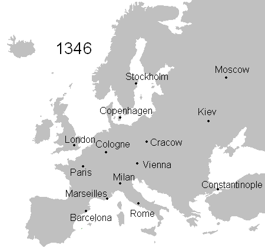
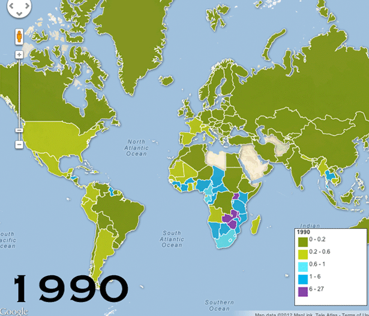

Epidemiile
Virusurile pot provoca epidemii care afectează oamenii, plantele și animalele. Multe maladii sunt transmise de agenți purtători, cum sunt țânțarii (malaria, febra galbenă), musca țețe (boala somnului), puricii, păduchii (tifosul exantematic) etc.
Răspândirea ciumei în Europa (1346-1353)
Cunoscută și sub numele de Ciumă, a fost o pandemie de ciuma bubonică care a avut loc în Eurasia de Vest și Africa de Nord. Este cea mai fatală pandemie înregistrată în istoria omenirii, provocând moartea a 75-200 de milioane de oameni, atingând apogeul în Europa. Ciuma bubonică este cauzată de bacteria Yersinia pestis răspândită de purici, dar în timpul Morții Negre a luat probabil și o formă secundară, răspândită prin contact de la persoană la persoană prin aerosoli, provocând ciuma pneumonică.
{kind=link}
Maladia SIDA
Este cea mai recentă pandemie produsă de virusul HIV, cu transmitere sexuală sau prin transfuzii de sânge. Pe Glob, se înregistrează, în medie, 6 îmbolnăviri noi pe minut, cea mai gravă situație fiind în Africa. Anual, 95% din cazurile nou-înregistrate revin țărilor în curs de dezvoltare.
{kind=link}